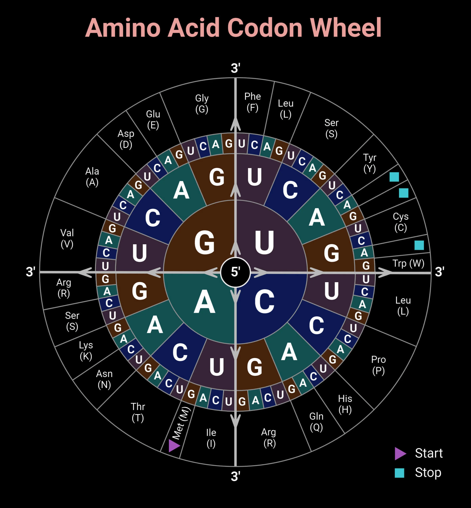

Protein synthesis is the process by which cells build proteins based on the instructions carried in DNA. It involves two main steps: transcription and translation.
Transcription (DNA → mRNA)
- Where: In the nucleus (for eukaryotes).
- Process:
- DNA is copied into messenger RNA (mRNA).
- Only one strand of DNA acts as a template.
- The base pairing rule is followed:
A (adenine) pairs with U (uracil) in RNA (instead of T),
C(cytosine) pairs with G(guanine).
- Result: A strand of mRNA that carries the code for a protein out of the nucleus to the ribosome.
Translation (mRNA → Protein)
- Where: In the ribosome (in cytoplasm).
- Key Players:
- mRNA (the messenger)
- Ribosome (the reader and builder)
- tRNA (transfer RNA, the carrier of amino acids)
- Amino acids (building blocks of proteins)
Codons and Reading Frame
- Codon: A group of 3 mRNA bases (nucleotides) that codes for one amino acid.
- The ribosome reads the mRNA 3 nucleotides at a time.(so the 5th amino acid in the sequence is coded by the 5th codon )
- Examples of codons:
- AUG = Start codon (also codes for methionine)
- UUU = Phenylalanine
- GGC = Glycine
- There are specific codons for each amino acid, and the matching is universal across most living organisms.

(note that there’s no need to memorise this as a chart will be given for any question involving this concept)
Role of tRNA (Transfer RNA)
- Each tRNA molecule carries a specific amino acid.
- tRNA has an anticodon, a set of 3 bases that are complementary to the mRNA codon.
- Process:
- The tRNA matches its anticodon to the codon on the mRNA.
- The ribosome links the carried amino acid of tRNA to the growing protein chain.
- The ribosome moves along the mRNA, reading codons and bringing the correct tRNAs one by one.
Building the Protein
- The ribosome joins amino acids together by forming peptide bonds.
- This chain of amino acids is called a polypeptide.
- The sequence in which amino acids are joined determines the primary structure of the protein.
How Protein Shape Depends on Sequence
- Protein structure levels:
- Primary structure: Sequence of amino acids.
- Secondary structure: Folding into alpha helices or beta sheets.
- Tertiary structure: Overall 3D shape due to side chain interactions.
- Quaternary structure (for some proteins): Arrangement of multiple polypeptide chains.
- The order of amino acids directly influences how the protein folds and its final shape.
- A protein’s shape determines its function (e.g., enzymes, hormones, antibodies).
Quick Summary Table
| Step |
Location |
Main Idea |
| Transcription |
Nucleus |
DNA → mRNA |
| Translation |
Ribosome (cytoplasm) |
mRNA → Amino acid chain |
| Codon Reading |
Ribosome reads 3 bases (codon) at a time |
| tRNA Role |
Carries specific amino acid, matches codon |
| Protein Folding |
Sequence of amino acids decides final 3D shape |
Fun Facts
- The genetic code is universal: same codons code for the same amino acids in almost all organisms!
- One mistake in sequence (mutation) can change a protein’s shape and cause diseases (like sickle-cell anemia).
Written by Kasiban Parthipan